News Aggregator
Il progetto consiste in un servizio web che permette agli utenti di registrarsi, quindi loggarsi e creare le proprie categorie di news (es: generali, sport, tecnologia). In ogni categoria è possibile inserire dei feeds (feed RSS, es: "notizie ansa") specificando nome, una URL primaria (es: http://www.ansa.it/feed.xml) e altre eventuali URLs (es: http://www.ansa.it/feed2.xml).
La visualizzazione dinamica dei contenuti avviene tramite Applet (lanciata dopo il login).
L'applet visualizza inizialmente le categorie inserite dall'utente. Cliccando su una di esse (es: categoria "informazioni") viene ricevuto e visualizzato l'elenco dei feeds inseriti.
Cliccando su un feed (es: "notizie ansa") vengono ricevuti (dall'application che chiama ed elabora il contenuto della url relativa es:
http://www.ansa.it/feed.xml ) e mostrati i titoli delle news disponibili ai link relativi al feed.
Cliccando su ogni titolo viene inviato all'applet il testo della news, che viene visualizzato.
Per utilizzare il servizio offerto dal sito, è necessario registrarsi.
Sotto il modulo Login (parte sinistra) è presente il link Registrati
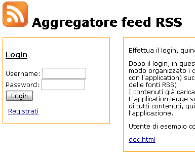
Cliccando si andrà alla pagina di registrazione (jsp/ registrazione.jsp)dove sono richiesti: nome, cognome, username, password e conferma password. La richiesta è effettuata alla pagina stessa in POST, che visualizza un contenuto diverso in base ai parametri della request. In figura il modulo di richiesta dati (request vuota)

Se la request non è vuota (dati passati in POST), la pagina effettua diversi controlli sui parametri della request, nell'ordine:
se uno di questi errori viene rilevato, allora la jsp visualizza l'errore in questione, altrimenti, aggiunge il nuovo utente agli utenti registrati: e visualizza un link per tornare all'HomePage.
In figura l'errore dovuto alle password non concidenti e la registrazione effettuata correttamente
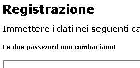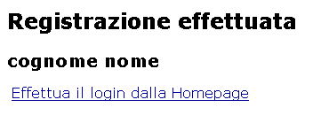
Una volta registrati, sono possibili due tipi di operazioni: modifica dati utente, Gestione feeds (inserimento delle urls dei feeds in una gerarchia), e visualizzazione tramite applet (homepage).
Analogamente all'inserimento, vengono compilati i campi in base ai cookie presenti. Cliccando su "salva modifiche", i dati utenti verranno aggiornati. Nota: l'username non modificabile, la password va inserita due volte per conferma. Per annullare l'operazione, cliccare sul link di ritorno all'homepage
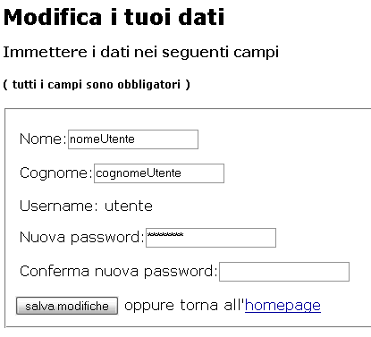
Al caricamento della pagina (jsp/categorie-elenco.jsp) vengono mostrato l'elenco delle categorie inserite. Se è il primo accesso, il file (<utente>.xml) con i contenuti viene automaticamente creato e inizializzato, non verrà visualizzata nessuna categoria. In alto viene mostrato l'username dell'utente collegato e i link per il logout, link alla pagina di modifica dati di registrazione, homepage (con applet interattiva)
Per ogni categoria (riga della tabella) è mostrato
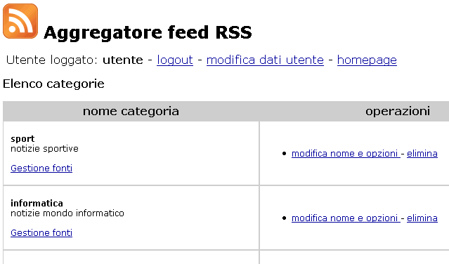
Operazione di modifica nome e opzioni : verrà precompilato un modulo modificabile in cui è possibile cambiare i valori e cliccare su "Modifica", oppure cliccare su "torna" e ritornare alla pagina con elenco categorie (nessuna modifica)
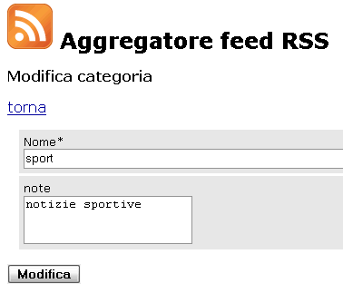
Cliccando su modifica, si andà alla pagina (Servlet Operazioni) che eseguirà l'operazione e fornisce il link per tornare all'elenco categorie
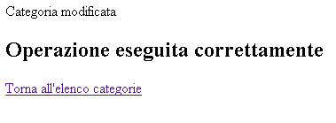
Al click su "elimina" nella pagina con l'elenco categorie, verrà richiesta conferma di cancellazione, quindi si verrà portati ad una pagina di conferma con link di ritorno all'elenco categorie
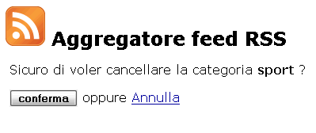
Sotto l'elenco è presente un modulo per inserire una nuova categoria
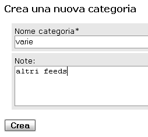
La mancata immissione del nome, comporta un errore segnalato con link per il ritorno e invito all'inserimento, altrimenti viene visualizzata conferma e link di ritorno ( la nuova categoria verrà mostrata nell'elenco)
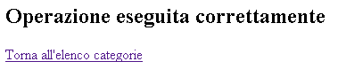 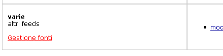
cliccando su Gestione fonti si andrà alla pagina con l'elenco feeds della categoria. In alto il nome della categoria e descrizione, link di ritorno a elenco cateogorie, e i feeds inseriti.
Per ogni feed è mostrato:
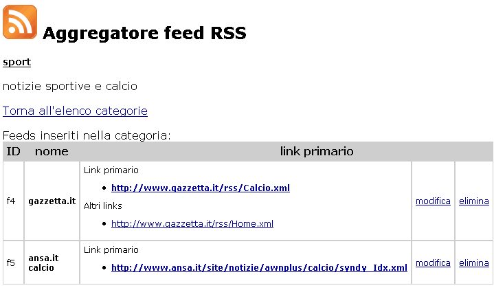
Al click su "modifica" si andrà alla pagina con modulo precompilato, dove è possibile (similmente alle categorie), modificare o annullare l'operazione. In caso di conferma (campo nome riempito e nessun errore del server), la pagina risultante mostrerà il risultato dell'operazione e il link di ritorno all'elenco di feeds corrente. E' possibile inserire da 0 a 4 links per il feed; cancellando la fonte 2, la fonte 3 prenderà il posto della 2.
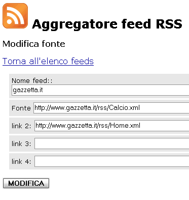
al click invece su elimina, in modo simile alle categorie, verrà richiesta conferma di cancellazione e quindi si verrà portati a pagina di conferma con link di ritorno ad elenco feeds
Inserimento feed
In fondo alla pagina con elenco feeds è presente un modulo per inserire un nuovo feed. Il modulo va compilato (analogamente alla modifica) con almeno il nome, gli altri dati potranno essere inseriti successivamente. Se l'operazione viene eseguita correttamente, verrà mostrato il link di ritorno all'elenco feeds, con il nuovo feed inserito.
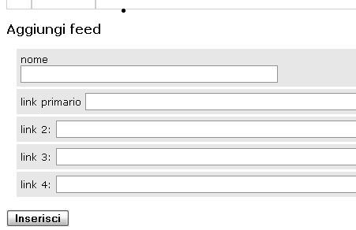
Se l'utente è loggato, l'homepage mostra sulla sinistra i link alle pagine già viste, e sulla destra l'applet che permette di fruire ai contenuti.
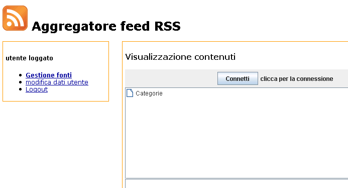
Premere il pulsante Connetti, verrà aperta una connessione con il server (application) richiedendo l'elenco delle categorie inserite dall'utente.
Se la connessione ha esisto negativo, verrà mostrato un messaggio con cui si invita a riprovare, altrimenti viene visualizzato il messaggio di connessione effettuata, il pulsante viene disabilitato, e nell'elenco ad albero sottostante vengono caricate ed espanse le categorie inserite (figura seguente).
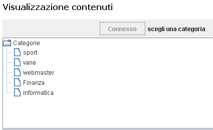
Al click su una categorie, viene inviata al server la richiesta dei feeds inseriti nella categoria (es: sport). Quando i feeds sono ricevuti, vengono mostrati i nodi figli di "sport" nell'albero.
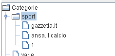
E' possibile in qualsiasi momento continuare l'espansione dei nuovi figli o di altre cateogorie, i contenuti già caricati ed espansi verranno mantenuti in memoria consentendo l'accesso immediato e non comportando nuove richieste all'application e relativi rallentamenti.
Prosegueno l'espansione dei nodi (es: gazzetta.it), verrà effettuata richiesta all'application dei titoli per il feed richiesto. In questo caso l'application contatta tutte le urls con le URLs dei feeds inseriti per il feed, ottenendo un elenco di titoli (con data accanto). Questa operazione potrebbe richiedere alcuni secondi in funzione del carico di lavoro del server e dei server con le urls, quindi viene mostrato un messaggio in cui si invita ad attendere (eventuali altri click verranno ignorati), al termine del caricamento (thread applet), i titoli vengono caricati ed espansi nel nodo del feed. Nota che le descrizione (testi dei titoli) non sono caricate, ma vengono caricate al click sui titoli, in modo da non ricevere dati non richiesti per titoli che non interessano.
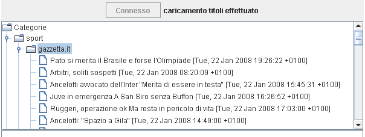
Si ricorda che anche in questa fase è possibile cliccare su nodi ad altri livelli, i contenuti (in questo caso anche i titoli) già caricati sono mantenuti in memoria e non verranno richiesti. Chiudendo il nodo con i titoli caricati, i titoli saranno mantenuti dentro consentendone in qualsiasi momento un accesso immediato (veid figura: gazzetta.it ha già caricato i titoli).
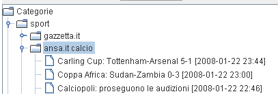
Al click su un titolo, viene inviata richiesta al server di ricevere i titoli per il feed. Quando ricevuti, vengono mostrati nella parte inferiore (formattazione html abilitata). Ricliccando su un titolo già caricato, non verrà rieffettuata la richiesta al server, ma verrà letto dalla memoria interna.
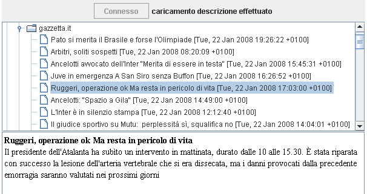
Se un feed non ha titoli disponibili (ad esempio perché la urls non è contattabile o non contiene titoli), viene generato un nodo speciale che avverte la mancanza e su cui i click non hanno effetto.
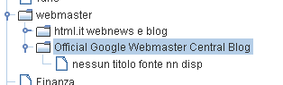
La computazione lato client si basa sull'applet interattiva per la visualizzazione di categorie, feeds e titoli. L'applet è caricata in homepage (index.jsp) e viene lanciata dopo il login, prendendo come parametro username, l'username dell'utente loggato (settato dalla jsp).
La scelta dell'applet è preferita rispetto ad una computazione lato server JSP/Servlet in quanto si desidera ricevere le informazioni in modo organizzato ed esplorarle dinamicamente, consentendo di accedere immediatamente a tutte le informazioni senza attese al server e con artefici grafici (grazie al JTree della applet e memorizzazione contenuti già ricevuti) per la visualizzazione.
La connessione dell'applet avviene infatti specificando l'username. La comunicazione con l'application avviene tramite l'invio di richieste xml e memorizzazioni dei dati ricevuti in cache, descritte nel dettaglio in "tipo informazioni memorizzate sul server e scambiate su rete" in questa sezione..
Il funzionamento dell'applet è documentato nella sezione precedente relativa all'uso del servizio. L'applet utilizza le librerie lib1, lib2, lib4, lib5, poste nella directory applet.
lib4 fornisce funzioni per memorizzare testi, titoli e dati dei titoli (nome, data, descrizione) tramite oggetto CacheTestiETitoli ed accederci in modo efficiente tramite l'ID associato. Tramite l'ID vengono identificati univocamente le gerarchie di contenuti (categorie, feeds, titoli) di questo servizio web sia nella memorizzazione sul server in file xml, sia nei messaggi xml di scambio (vedi parti successive).
lib5 fornisce funzioni per memorizzare le categorie e titoli ricevuti ed evitare di richiederli quando già presenti in memoria. In relazione a questo, vedi CacheApplet costruito e gestito tramite CacheAppletFactory. Quest'ultima classe si occupa della comunicazione con l'application, astraendo l'applet dai dettagli relativi alla comunciazione e fornendo metodi per accedere ai contenuti in modo semplice senza sapere se già presenti in cache o se verranno richiesti all'application, quindi ricevuti e memorizzati. La classe incorpora anche CacheTestiETitoli di lib4 (descritta sopra), che viene analogamente gestita in modo trasparente all'applet (cioè i titoli e descrizioni già richiesti e ricevuti non verranno nuovamente richiesti, ma letti dalla cache).
lib4 e lib5 sono volutamente separate poiché l'application richiede solo lib4 (non necessita infatti di cache per categorie e feeds in quanto presenti nel file xml sul server relativo all'utente).
L'applet (applet1) astrae dai dettagli della comunicazione. Il metodo init() istanzia tutti i componenti (listener della JTree escluso). Al click sul pulsante connetti, chiama le funzioni di connessione di CacheAppletFactory (oggetto incorporato nell'applet), in particolare boolean accesso(String username). In base al risultato della funzione l'applet riempirà la JTree o mostrerà errore. La lettura di categorie, feeds, titoli, descrizioni è effettuata con primitive singole di CacheAppletFactory che consente di ottenere arrays di ID di tutti i contenuti e relativi valori (metodi che ottengono valore in base all'ID, ad es: getNomeCategoria(String id)).
L'applet salva internamente solo l'elenco degli IDs delle categorie e feeds. Alla generazione però associa il nodo ad un lister tramite HashMap, ovvero associa oggetti DefaultMutableTreeNode su Stringhe / classi per identificare il nodo tramite: ID per la categoria, ID per il feed, (ID feed. ID titolo) per il titolo.
Al click su un nodo non espanso, viene identificato quindi il livello (cioè se categoria o feed o titolo), letto gli ID tramite la HashMap, e chiamata la funzione relativa di CacheAppletFactory con l'ID (o gli IDs per i titoli) relativi.
Al click su un nodo feed non espanso, la chiamata per leggere i titoli avviene in un Thread interno (caricaTitoliThread), questo in modo da mostrare un messaggio di caricamento in corso mentre l'application processa le urls, e non far sembrare l'applet "bloccata". Tutti gli altri contenuti sono risolti localmente al server e non necessitano di thread. Se il contenuto non è presente o si verifica un errore, la procedura viene comunque eseguita subito.
La chiusura della socket avviene con la destroy() dell'applet. Per riconnettersi al server è quindi sufficiente ricaricare la pagina.
Consultare prima la sezione relativa all'uso del servizio relativa alla registrazione utenti e inserimento contenuti.
La computazione è realizzata tramite JSP per le pagine di visualizzazione contenuti inseriti, moduli di inserimento, form di registrazione e modifica dati utente, pagina di modifica e cancellazione, con l'ausilio di classi in lib2 e lib3.
Le SERVLET sono utilizzate per processare dati in post e settare cookie, salvare, cancellare, modificare dati dei contenuti in base ai parametri passati.
La scelta di usare Servlet e JSP per queste funzionalità è dovuta al fatto che i contenuti sono inviati con poca interattività (sola lettura e scrittura organizzata sul server). L'utilizzo di una applet sarebbe risultata quindi una soluzione scomoda.
Files delle JSP
| nome JSP | funzionalità | librerie classi usate |
|---|---|---|
| index.jsp | homepage del sito Nella parte sinistra la parte relativa al login, a destra descrizione del servizio ed eventuale applet. Legge il cookie, se presente e valido sulla sinistra stampa i link per logout, gestione dati utente o gestione contenuti e sulla destra carica l'applet settando il valore del parametro username dell'applet con il valore del cookie |
CookieFactory per lettura cookie username |
| jsp/categorie-elenco.jsp | mostra elenco delle categorie I contenuti dell'utente sono letti istanziando NewsXmlFactory sul file di nome <username>.xml presente in cartella /xml Se il file non esiste, viene creato dalla classe. Il modulo di inserimento categoria richiama la servlet Operazioni specificando come azione l'inserimento di cateogoria. I link per gestione feed richiamano la pagina feed-elenco.jsp passando come parametro (GET) l'ID della categoria (parametro identificativo nel file xml di salvataggio contenuti) I link di cancellazione categoria richiama categorie-cancella.jsp passando ID categoria Il link di modifica categoria richiama categorie-modifica.jsp passando ID categoria |
NewsXmlFactory.* |
| jsp/categorie-modifica.jsp | crea un modulo riempito con i valori letti della categoria passata (tramite ID in GET). In caso di posting, viene chiamata la sevlet Operazioni specificando l'operazione e l'id della categoria | NewsXmlFactory.* |
| jsp/categorie-cancella.jsp | crea un modulo con campo nascosto ( ID categoria in GET). In caso di posting, viene chiamata la sevlet operazioni specificando l'operazione di cancellazione (e l'id della categoria) | NewsXmlFactory.* |
| jsp/feed-elenco.jsp | mostra elenco dei feeds, link di ritorno categoria, quindi (analogamente a elenco categorie per il passaggio dati alle sottopagine) i vari link per gestione feeds | NewsXmlFactory.* |
| jsp/feed-modifica.jsp | crea un modulo riempito con i valori letti del feed passato (tramite ID in GET). In caso di posting, viene chiamata la sevlet Operazioni specificando l'operazione e l'id del feed | NewsXmlFactory.* |
| jsp/feed-cancella.jsp | crea un modulo con campo nascosto ( ID feed in GET). In caso di posting, viene chiamata la servlet operazioni specificando l'operazione di cancellazione (e l'id del feed) | NewsXmlFactory.* |
| jsp/registrazione.jsp | La pagina dedicata alla registrazione di un nuovo utente, registrazione.jsp, visualizza un contenuto diverso in base ai parametri della request: se la request è vuota, viene presentata la form per effettuare la registrazione, l'azione della form è sempre indirizzata alla pagina stessa se la request non è vuota, la jsp effettua diversi controlli sui parametri della request, nell'ordine:
se uno di questi errori viene rilevato, allora la jsp visualizza l'errore in questione, altrimenti, sempre utilizzando la classe UserXml, aggiunge il nuovo utente agli utenti registrati: new UserXml().addUser(username,password,nome,cognome); e visualizza un link per tornare all'HomePage. |
userXmlFactory.* |
| jsp/modifica_dati_utente.jsp | La pagina per la modifica dei dati ha un funzionamente del tutto simile a quella per la registrazione:
|
userXmlFactory.* |
Files delle SERVLET
| nome Servlet e mappaggio url | funzionalità | librerie classi usate |
|---|---|---|
| Login.java /Login |
controlla esistenza username e validità password, quindi setta cookie in caso positivo e mostra link per gestione contenuti e homepage L'eventuale errore viene notificato |
userXmlFactory.* |
| Logout.java /Logout |
cancella il cookie username e rimanda all'homepage |
|
| Operazioni.java /Operazioni |
in base al valore del parametro "azione" passato come campo hidden dei moduli delle jsp, effettua le operazioni (precedentemente descritte) :
Se l'azione non è una di queste, viene stampato "operazione non valida". Al termine delle operazioni sono mostrati i link per tornare alla gestione con le jsp |
NewsXmlFactory.* |
Application
Genera un thread per ogni connessione su socket da parte dell'applet (porta 2518).
Elabora il documento ricevuto, quindi in base al nome del nodo root esegue le operazioni seguenti:
| nome nodo | attributi passati | operazione | funzione |
| accesso | username | invia elenco categorie per l'utente passato errore se | inviaElencoCats(String username) o inviaErrore(String err) |
| get_feeds | idcat | invia Elenco Feeds per la categoria richiesta | inviaElencoFeeds(String idCat) |
| get_titoli | idfeed | invia Elenco Titoli per il feed richiesto * | inviaElencoTitoli(String idFeed) * |
| get_testo | idfeed, id (titolo) | invia testo per il titolo richiesto (idenficato anche con id del feed) | inviaTesto(String idFeed, String id) |
| closeSocket | chiude la socket | ||
| esci | termina l'applicazione |
Il formato dei messaggi è descritto nella parte successiva.
Dopo la richiesta di accesso, l'application costruisce un oggetto NewsXmlFactory sull'utente che richiede la connessione, quindi ha i metodi per ottenere categorie e feeds (tutti disponibili immediatamente).
*
I Titoli vengono invece richiesti tramite classe RssReader che chiama le urls del feed, le processa ed estrae i titoli (nomi, date, descrizioni), poi li salva tutti in oggetto interno di classe CacheTestiETitoli (lib 4, in comune con applet). I titoli sono trattati dall'application con oggetti di classe RssElemento, a loro volta contenuti in ListaElementiRss (incorporata in CacheTestiETitoli). Errori parsing gestiti con MyErrorHandler.
Utenti
Gli utenti sono salvati nel file xml/utenti.xml secondo lo schema DTD (xml-types/utenti.dtd) seguente
<!ELEMENT utenti_registrati (utente*)>
<!ELEMENT utente (#PCDATA)>
<!ATTLIST utente username ID #REQUIRED>
<!ATTLIST utente password CDATA #REQUIRED>
<!ATTLIST utente nome CDATA #REQUIRED>
<!ATTLIST utente cognome CDATA #REQUIRED>
Categorie, feeds e urls
salvati in files xml/<username>.xml (è effettuato un controllo per evitare registrazione di nomi di utenti con username "utenti" e che non contengano caratteri che non possono essere usati in nomi di files).
Schema (xml-types/feeds.dtd):
<!ELEMENT elenco_categorie (categoria_feed*)>
<!ELEMENT categoria_feed (feed*)>
<!ATTLIST categoria_feed id_cat ID #REQUIRED>
<!ATTLIST categoria_feed nome CDATA #REQUIRED>
<!ATTLIST categoria_feed note CDATA #IMPLIED>
<!ELEMENT feed (url_primaria, (url*))>
<!ATTLIST feed id_feed ID #REQUIRED>
<!ATTLIST feed nome CDATA #REQUIRED>
<!ELEMENT url_primaria (#PCDATA)>
<!ELEMENT url (#PCDATA)>
Notare l'utilizzo degli ID che identificano univocamente categorie e ids nel documento. La classe di gestione di questi files (NewsXmlFactory) gestisce automaticamente gli ID, creandone uno univoco all'aggiunta di una nuova categoria o feed nella forma rispettivamente "c<N>" e "f<N>" dove N è un numero progressivo (analogamente a chiavi auto_increment per database relazionali).
Messaggi scambiati
Si presenta uno schema come riepilogo dei messaggi scambiati (da leggere da sinistra verso destra, quindi dall'alto verso il basso), con relative DTD.
| APPLET | APPLICATION |
|---|---|
Applet: una volta che l'utente loggato, l'applet legge il parametro username settato dal cookie tramite JSP, e invia una richiesta al server [ accessoERichiediCats(String username) ] <accesso username="luigi"></accesso> <!ELEMENT accesso> |
Application: riceve il messaggio e risponde con l'elenco delle categorie [ inviaElencoCats(String username) ] <elenco_cat> <!ELEMENT elenco_cat (cat*)> La lettura avviene dal file luigi.xml, tramite la classe NewsXmlFactory (che legge e memorizza tutto il contenuto del file xml). <errore msg="Impossibile leggere i dati per l'utente luigi"></errore> <!ELEMENT errore (#PCDATA)> |
Applet: legge l'elenco delle categorie, quindi salva internamente le categorie nell'oggetto CacheApplet (oggetto che memorizza di volta in volta l'albero dei contenuti ricevuti, evitando la richiesta se i dati richiesti sono stati già ricevuti) [salvaCategorie] Applet: l'utente sceglie una categoria (es: sport), e invia all'application il messaggio (si noti che viene inviato l'id, non il nome della categoria) <get_feeds idcat="c1"></get_feeds> <!ELEMENT get_feeds> |
Application: invia l'elenco dei feeds presenti nella categoria "sport"[ inviaElencoFeeds(String idCat)] <elenco_feeds> <!ELEMENT elenco_feeds (feed*)> |
Applet: legge l'elenco dei feed e salva internamente in CacheApplet [salvaFeedsRicevuti()] Applet: l'utente sceglie un feed (es: gazzetta.it), e invia all' application il messaggio (si noti che viene inviato l'id del feed, tale id è univoco nell'intero documento xml dell'utente, quindi è sufficiente per identificarlo fra le categorie). <get_titoli idfeed="f1"></get_titoli> <!ELEMENT get_titoli> |
Application: se è la volta che l'utente richiede il feed, vengono processate le urls con contenuto xml (RssReader) e memorizzati internamente i contenuti (classe cacheTestiTitoli), altrimenti vengono lette dalla memoria interna. Poi i titoli vengono spediti all'Applet [funzione inviaElencoTitoli()] <titoli idfeed="f1"> <!ELEMENT titoli (titolo*)>
|
Applet: legge i titoli ricevuti e salva internamente [salvaTitoliRicevuti()] nel proprio oggetto CacheTestiETitoli (in libreria usata anche da Application). Applet: l'utente sceglie un titolo e invia la richiesta per visualizzarne il contenuto (tag description nella sintassi RSS) <get_testo idfeed="f1" id="1"></get_testo> <!ELEMENT get_testo> |
Application: legge dalla cacheTestiTitoli e restituisce il relativo contenuto (già memorizzato) [inviaTesto(String idFeed, String n)] <testo idfeed="f1" id="1"> <!ELEMENT testo (#PCDATA)> |
| Applet: salva il testo nella cache interna (oggetto CacheApplet) [salvaDescription() ] , per poi essere immediatamente accessibile | |
| Applet: chude socket
<closeSocket></closeSocket> <!ELEMENT closeSocket EMPTY > |
Prima di compilare i sorgenti dell'applicazione è necessario modificare il file di configurazione Config.java situat in progetto lib1.
Per il corretto funzionamento delle Applet è necessario che nella directory public_webapp/applet siano presenti i seguenti jar
L'applicazione usa le librerie lib1, lib2, lib4 (da inserire in cartella application/lib), va lanciata con nohup java -jar application.jar &, da /application. Il file nohup.out contiene eventuali messaggi di errore restituiti da application. Per terminare applicazione: ps -x, individuare il pid corrispondente, quindi eseguire kill N, oppure connettersi alla socket e inviare messaggio <esci /> .
Files xml: controllare che il percorso DTD relativo nel file sia ../xml-types/nome.dtd altrimenti vengono restuiti errori lato server (Malformed Url) anche disabilitando la validazione in lettura.